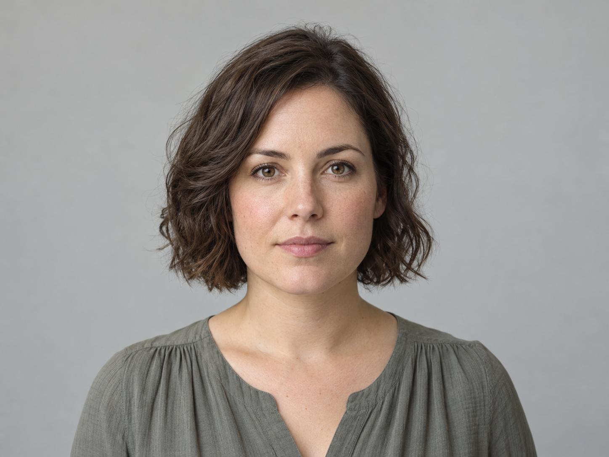

Escape Room · Elenco fictício7set.dev / O ARQUIVO CORROMPIDO
Personagens fictícios
Nove retratos individuais em 4:3 horizontal. Clique na imagem para abrir o PNG original.
Retratos aplicados às fichas, ao crachá e ao arquivo estudantil. Bryan: versão 02 aprovada.
P01 Carlos MendesPersonagem fictício · imagem gerada por IAP02 Helena DuartePersonagem fictício · imagem gerada por IAP03 Marcelo VieiraPersonagem fictício · imagem gerada por IAP04 Renata LimaPersonagem fictício · imagem gerada por IAP05 Eduardo NunesPersonagem fictício · imagem gerada por IA
P06 Patricia AlvesPersonagem fictício · imagem gerada por IAP07 Lucas MartinsPersonagem fictício · imagem gerada por IAP08 Camila RochaPersonagem fictício · imagem gerada por IAP09 Bryan AlmeidaPersonagem fictício · imagem gerada por IA